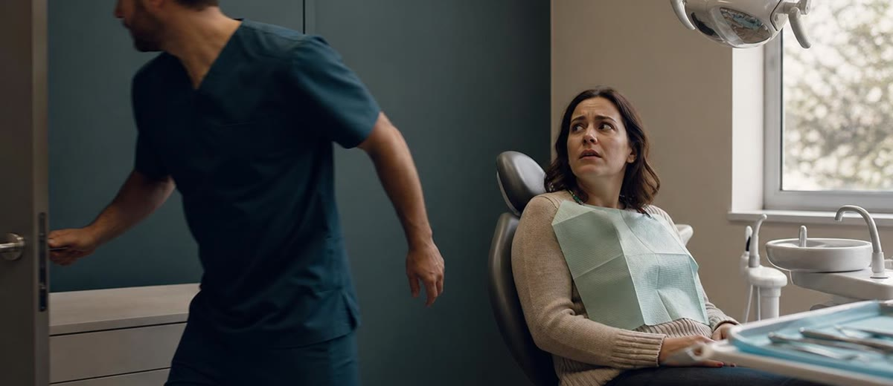

Tres errores en la primera visita que frenan la conversión dental

Hay clínicas que pierden un tratamiento antes de haberlo defendido.
No porque el diagnóstico sea malo. No porque el precio sea imposible. No porque el paciente haya venido solo a comparar.
Lo pierden en la primera visita, cuando el paciente todavía está intentando entender qué le pasa, cuánto riesgo tiene y si puede confiar en la clínica que tiene delante.
La primera visita no es un trámite
Para el equipo puede ser una cita más en una mañana cargada. Para el paciente, muchas veces es otra cosa: dolor, miedo, vergüenza, dudas económicas o la sensación de que va a recibir una noticia incómoda.
Si la clínica trata ese momento como un paso rápido antes del presupuesto, la conversación nace mal. Y cuando la conversación nace mal, luego se intenta arreglar con descuento, insistencia o más llamadas de seguimiento.
Ese es el problema: se llama marketing dental a lo que en realidad empezó como una fuga de gestión dentro de la clínica.
Error 1: atender con prisa
La prisa se nota. Se nota en la mirada, en el tono, en la mano cerca del pomo de la puerta y en la explicación que se queda a medias.
Un paciente que lleva tres noches durmiendo mal por un dolor no vive ocho minutos como eficiencia. Los vive como falta de importancia. Y si siente que no importa, difícilmente va a confiar un tratamiento relevante.
- Antes de hablar de precio, hay que ordenar el momento: motivo de consulta, preocupación principal, expectativa y urgencia real.
- Antes de presentar opciones, hay que comprobar comprensión: el paciente debe saber qué ocurre y por qué conviene actuar.
- Antes de cerrar la visita, hay que dejar un siguiente paso claro: no una despedida amable y ya veremos.
La prisa ahorra minutos en agenda y puede costar miles de euros en confianza.
Error 2: explicar para el dentista, no para el paciente
El lenguaje técnico tiene su sitio. Pero no siempre ayuda a vender un tratamiento.
Cuando alguien escucha "periodontitis moderada con pérdida de inserción" puede que el diagnóstico sea correcto, pero la idea no aterriza. El paciente no compra términos. Decide cuando entiende el problema, el riesgo de no hacer nada y el beneficio concreto de actuar.
Una buena explicación no infantiliza. Traduce. Baja el diagnóstico al mundo del paciente.
Error 3: poner la cifra antes que el valor
Hay una forma muy común de matar un presupuesto: enseñar el número antes de haber construido el contexto.
En ese momento, 600 euros y 6.000 euros pueden sonar igual de caros. No porque valgan lo mismo, sino porque el paciente todavía no sabe qué gana, qué evita, qué alternativas tiene y qué pasa si lo deja pasar.
El precio necesita una historia honesta alrededor. No una historia de vendedor. Una explicación clínica, práctica y humana.
- Qué problema resuelve: no solo qué procedimiento se hará.
- Qué riesgo reduce: dolor, pérdida de piezas, empeoramiento, tratamientos más complejos.
- Qué experiencia tendrá: tiempos, fases, molestias esperables, revisiones y seguimiento.
- Qué decisión tiene delante: actuar ahora, planificar o asumir las consecuencias de esperar.
La lectura de negocio
Lo incómodo es esto: muchos presupuestos no se pierden por el precio. Se pierden porque la clínica no ha creado las condiciones para que el precio tenga sentido.
Y eso no se arregla comprando una máquina nueva, contratando más publicidad o bajando tarifas. Se arregla revisando el sistema de primera visita: recepción, tiempos, explicación, presentación del plan, financiación si procede y seguimiento.
En Método EBA esta parte se trabaja como gestión comercial de la clínica, no como una técnica agresiva de venta: captar pacientes, recibirlos bien, explicar con claridad y acompañar la decisión forman parte del mismo sistema.
Qué puede revisar mañana una clínica
No hace falta montar un proyecto enorme para empezar. Basta con observar una mañana de primeras visitas con una libreta y responder con honestidad.
- ¿Cuánto tiempo real recibe cada paciente antes del presupuesto?
- ¿Qué palabras del equipo entiende cualquier persona fuera del sector?
- ¿La cifra aparece después de explicar valor o cae encima de la mesa demasiado pronto?
- ¿El seguimiento continúa la conversación o solo pregunta si el paciente ya se ha decidido?
La primera visita no tiene que ser perfecta. Tiene que ser clara, humana y bien dirigida.
Cuando eso ocurre, la clínica no necesita empujar tanto. El paciente entiende mejor. Pregunta mejor. Decide mejor.
Y esa es una forma mucho más sana de vender odontología.